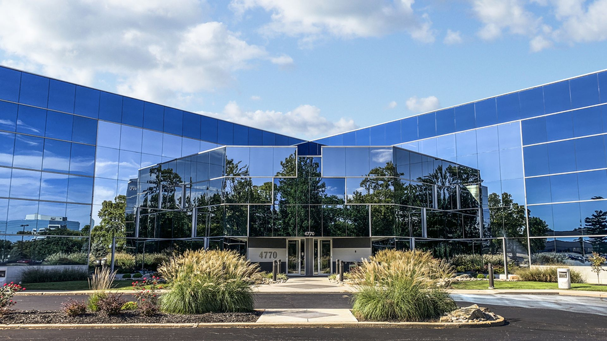
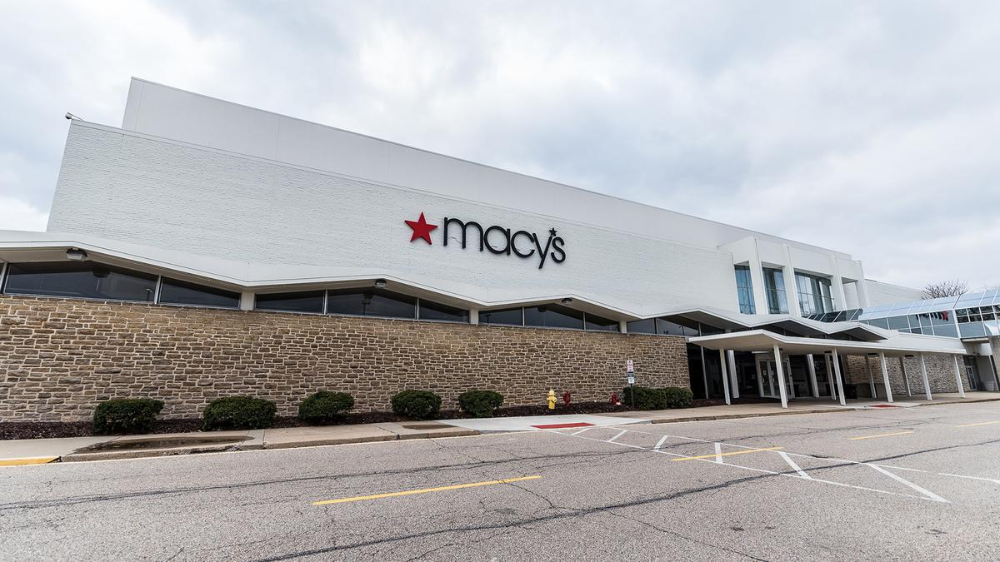

Back to About Me
Cincinnati Eye Institute
Desktop Support
- Managed strict security access through Active Directory and Symantec VIP Manager in order to prevent phishing attacks
- Created and edited knowledge-based articles to better manage troubleshooting times for quicker resolution
- Installed and configure printers, scanners, phones, and pcs to the network
- Utilized Active Diretory to manage and create security groups and grant access to files and folders

Atos
Help Desk Analyst
- Provide technical support to network, database, security, and development overnight teams to prevent outages occurring during business hours. Consulting with the incident management team to find solutions to network and server issues.
- Assist with troubleshooting Windows and network issues to end users using remote control tools.
- Managed strict security access through Active Directory and Symantec VIP Manager in order to prevent phishing attacks

Express Scripts
Service Desk Analyst
- Assist with establishing internet connection using a virtual private network and basic browser troubleshooting
- Assist healthcare professionals with managing online accounts for hospital enterprise software by providing password resets and escalating application issues to the development team

Macy's
Sales Associate
- Achieved an average of 100% of daily sales goals by connecting with customers and developing a relationship
- Making positive impacts on customers by listening and catering to their shopping needs
- Keeping department area tidy and organized for a presentable customer experience